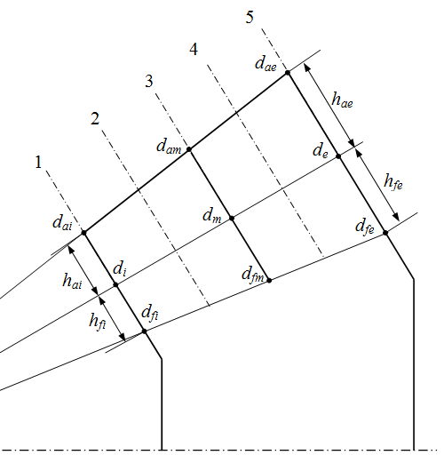
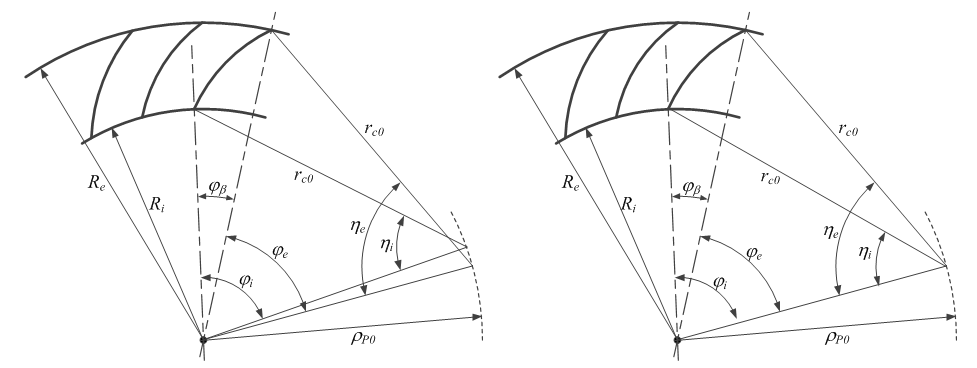

|
|
|


锥齿轮：生成 3D 模型
直齿、螺旋齿和弧齿锥齿轮的3D几何模型根据 ISO 23509 定义，齿形在齿宽方向的多个截面处计算。齿形以 90° 放置于当量圆柱齿轮的平面渐开线上。然后，通过扫掠各截面的齿形生成齿面。各截面的齿形通过角度 φβ 变换到相应位置。展成加工和铣平面加工中，各截面的角度 φβ 分别利用辅助角 φ 和 η 计算。因此，沿齿宽方向的最终齿形为延伸外摆线（展成）或圆弧（铣削）形。

图11.1：齿形计算的截面定义

图 11.2：展成（左）与铣平面（右）加工的变换角
机床制造商（如 Klingelnberg 和 Gleason）也有自己的齿形展成工艺，与上述过程略有不同。该齿形称为准渐开线齿形（octoid），可能与我们的齿形略有不同。然而，我们已经确认齿形之间的差异远小于公差范围，不会在实际使用中造成任何问题。
Bevel gear: generating a 3D model
The 3D geometry model for straight, helical and spiral bevel gears is defined according to ISO 23509 and the tooth form is calculated for several sections along the facewidth. The tooth form is placed across the planar involutes of the virtual cylindrical gear, at ninety degrees. Then, the tooth flank surface is generated by sweeping the tooth forms of the sections. The tooth forms in the individual sections are transformed by the angle φβ into the relevant position. The angle of each section φβ is calculated separately for the generating and face milling processes by using the auxiliary angles φ and η. For this reason, the final tooth form along the facewidth is an extended epicycloid (generating) or circular (milling) form.
Figure 11.1: Definition of the sections for tooth form calculation
Figure 11.2: Transformation angle of generating (left) and face milling (right) processes
Machine tool manufacturers (such as Klingelnberg and Gleason) also have their own processes for generating tooth forms that differ slightly from the procedures mentioned above. The tooth form is called an octoid, and may differ slightly from our tooth form. However, we have ascertained that the difference between the tooth forms is much less than the tolerance range, and will not cause any problems in practical use.